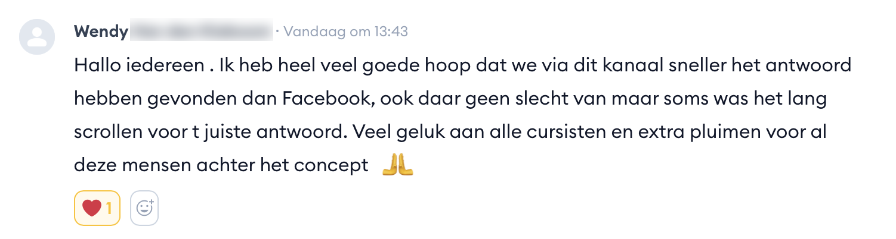
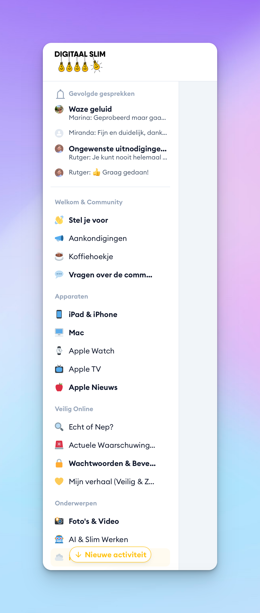
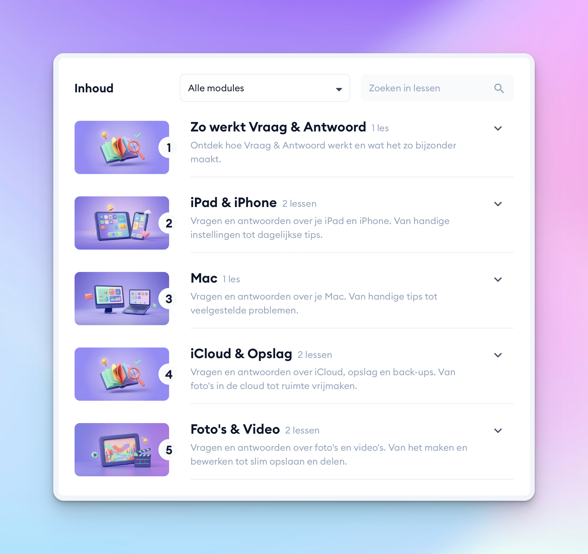
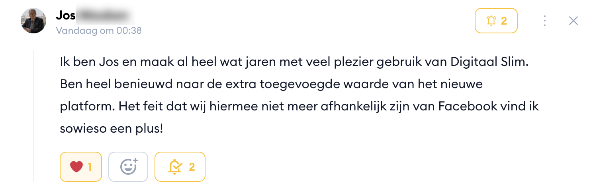
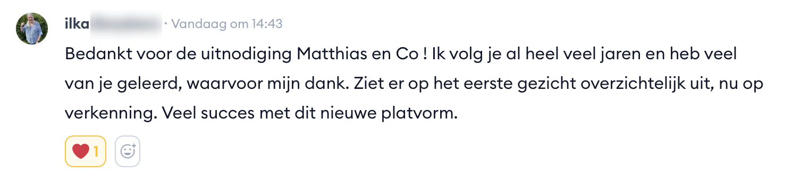
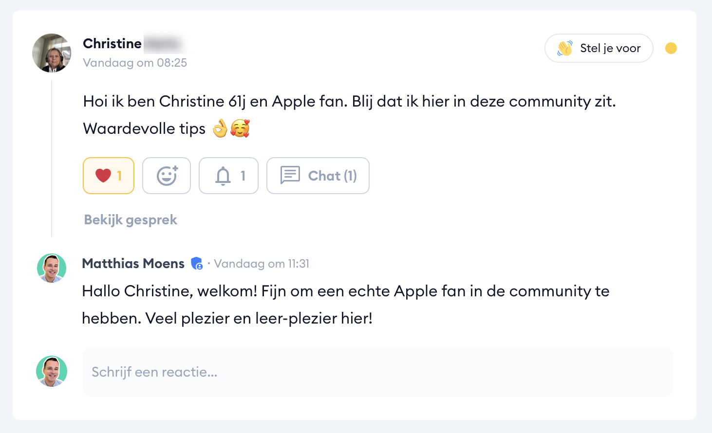
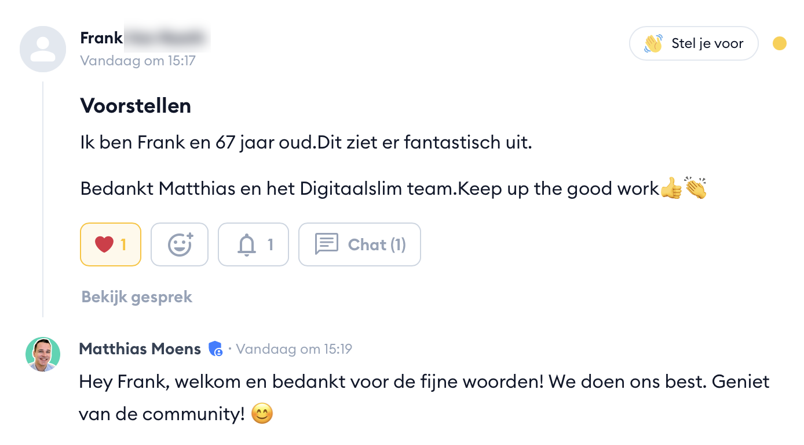
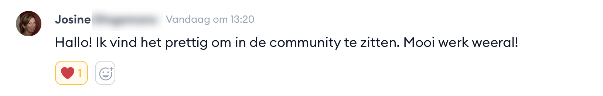
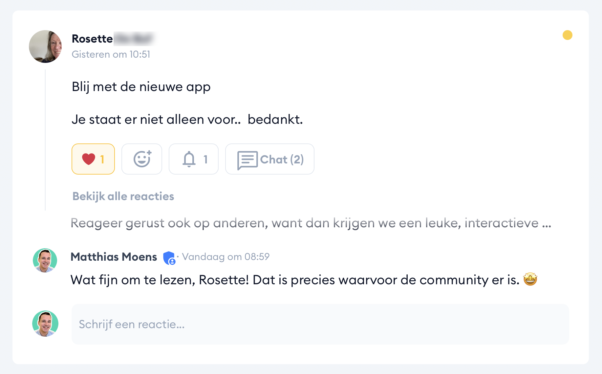

Onze Facebookgroep is goed.
Maar het kan beter.
We helpen al jaren duizenden mensen in onze Facebookgroep. Elke dag. Maar we liepen steeds vaker tegen de grenzen van het platform aan. Daarom hebben we iets nieuws gebouwd.
We helpen al jaren duizenden mensen in onze Facebookgroep. Elke dag. Maar we liepen steeds vaker tegen de grenzen van het platform aan. Daarom hebben we iets nieuws gebouwd.
Miranda had iCloud Foto's ingeschakeld. Al haar foto's stonden in de cloud. Maar toen ze haar opslagruimte controleerde, namen haar foto's nog steeds gigabytes in op haar iPad. Waarom? In de video hieronder ontdek je het antwoord, en meteen ook hoe onze nieuwe community werkt.
Klik op play om de video te bekijken.
Meer dan 4.000 leden. Elke dag vragen, elke dag antwoorden. Daar doen we al jaren ons best, en dat blijven we ook doen.
Maar eerlijk? We hebben geen controle over wat Facebook ermee doet. Er verschijnt steeds meer reclame tussen de berichten. Oplichters proberen onze groep binnen te komen. En als iemand twee weken geleden een goede vraag stelde, is dat bericht al lang verdwenen onder tientallen nieuwe posts. Dezelfde vraag wordt keer op keer opnieuw gesteld, omdat niemand het originele antwoord nog terugvindt.
Dat is niet de schuld van onze leden. Dat is hoe Facebook werkt. En daar hebben wij geen grip op.
Daarom hebben we een eigen platform gebouwd. Een plek waar alles per onderwerp bij elkaar staat. Waar je antwoorden altijd terugvindt. Waar geen reclame tussenstaat, geen oplichters binnenkomen, en waar je privacy gegarandeerd is. Met een eigen app op je iPhone en iPad.
Je weet dat het er was. Maar scrollen helpt niet, zoeken helpt niet. Het is begraven onder nieuwe berichten. En dan stelt iemand dezelfde vraag opnieuw.
iPad-vragen bij iPad. iCloud bij iCloud. Je opent het onderwerp en vindt wat je zoekt. Ook als het antwoord van drie maanden geleden is.
Nep-accounts die leden benaderen. Advertenties die eruitzien als tips. Wij doen ons best om het schoon te houden, maar Facebook maakt het ons niet makkelijk.
Geen advertenties. Geen oplichters. Geen tracking. Je gegevens zijn van jou. En je hebt geen Facebook-account nodig om erin te komen.
Niet jij. Facebook beslist welke berichten je te zien krijgt en welke niet. Misschien mis je precies het antwoord dat je nodig had.
Jij kiest het kanaal. Jij leest wat je wilt. Geen algoritme dat voor jou beslist.
We weten dat veel van jullie worstelen met Facebook. Sommigen hebben hun account al opgezegd. Anderen gebruiken het alleen nog voor onze groep en willen er eigenlijk vanaf.
Dat begrijpen we. En dat is precies een van de redenen waarom we deze community hebben gebouwd. Je hebt geen Facebook-account meer nodig om bij ons terecht te kunnen. Alles draait op een eigen platform. Jouw gegevens blijven van jou. Geen advertenties, geen tracking, geen oplichters die je proberen te benaderen. Privacy en veiligheid staan bij ons voorop.
Miranda stelde deze vraag in het kanaal iCloud & Opslag. Het soort vraag dat heel veel mensen herkennen, maar waar je online geen duidelijk antwoord op vindt.

Je iPad bewaart een lokale kopie van je foto's zolang er genoeg ruimte is. Pas als de opslag vol raakt, ruimt je toestel die lokale bestanden automatisch op. We hebben het stap voor stap uitgelegd, met schermafbeeldingen.

Tientallen leden lazen mee. Rachel: "Weer iets bijgeleerd." Marie-Jeanne: "Nu zit het er terug goed in."


Je opent het onderwerp, stelt je vraag, en krijgt antwoord. Altijd terug te vinden, ook over drie maanden.

Instellingen, tips, dagelijks gebruik
Sneltoetsen, problemen, handige trucs
Foto's, back-ups, ruimte vrijmaken
Maken, bewerken, opslaan, delen
Spam, veiligheid, e-mail instellen
Nieuwe technologie, slim inzetten







Die blijft voorlopig bestaan. Maar onze focus verschuift. De community is waar we nu volop in investeren: nieuwe antwoorden, nieuwe video's, nieuwe functies. Dat is de plek waar het gebeurt.
1.648 leden zitten er al in. Binnenkort laten we ook nieuwe leden toe.